You may need to arrange meetings where the attendees are not in the same place. To facilitate this, Meddbase enables you to set up and run online meetings with video capabilities.
To help you, this article outlines:
How to set up an online meeting in Meddbase
What happens when an online meeting has been successfully created
What you can do to manage an online meeting after it has been created
Further hints and tips on online meeting setup.
To use this feature, the chamber must have Telemedicine enabled. Please contact Support to arrange this.
How do you book an online meeting in Meddbase?
To do this:
Go to the Calendar from the start page of the Meddbase application
Navigate to the appropriate date for the meeting via the monthly calendar in the top-left
With the correct day displayed, click on the time slot representing the start time for the meeting
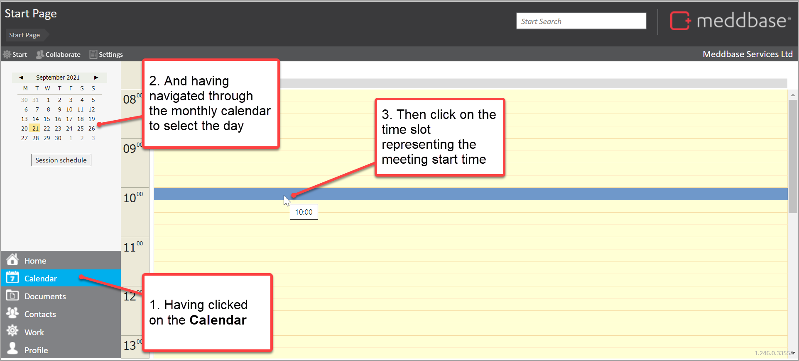
In the Book a meeting dialogue displayed, tick the Online video meeting check-box
Optionally:
Update the Length of the meeting from the pick-list
Update the Site from a pick-list
Add a Location value from a pick-list (belonging to the site)
Set a Subject for the meeting
Add Notes for the meeting Having done this, your screen will look similar to the one below.
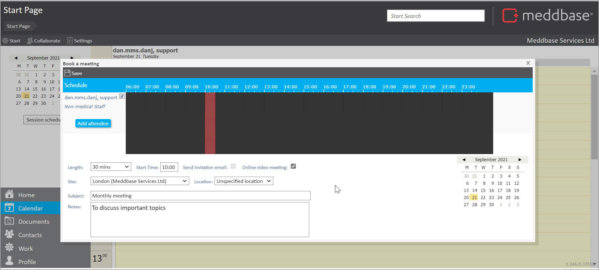
To add an attendee:
Select the Add attendee option on the left-hand side of the screen
In the Clinician search dialogue that appears input the search criteria
Select the required record from the results In the example below, we can see that inputting a search value of tolstoy returns one Medical Staff record which can then be selected from the results.
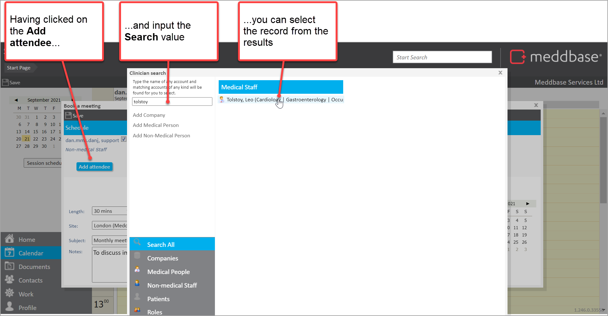
Add further attendees as needed (following a similar process to step 6 above)
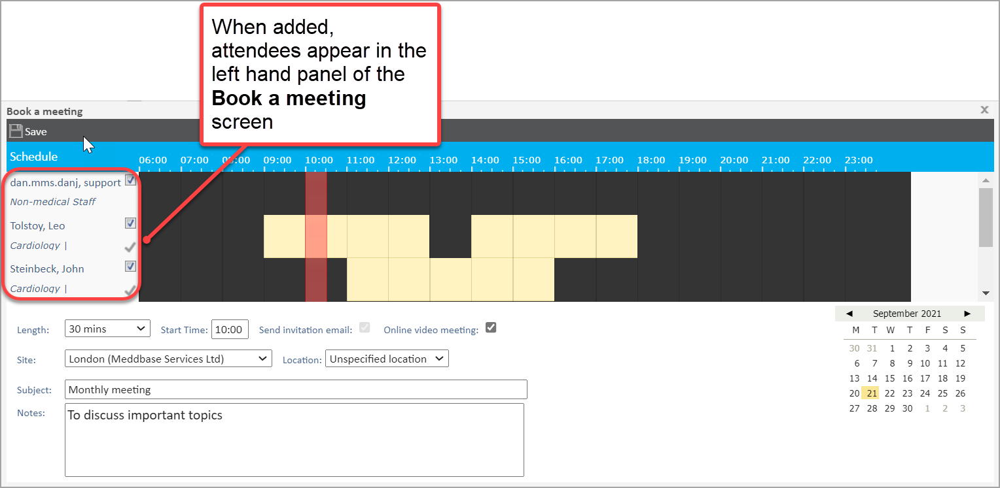
When complete, click on Save in the top-left of the Book a meeting screen
What happens when the booking is completed for an online meeting?
The successful creation of the booking for an online meeting leads to a few things happening. These are summarised below.
A meeting invitation email is sent to attendees
Each attendee will be sent an invitation email. This email:
Has the same Subject as the meeting that was created
Contains a Join meeting link.
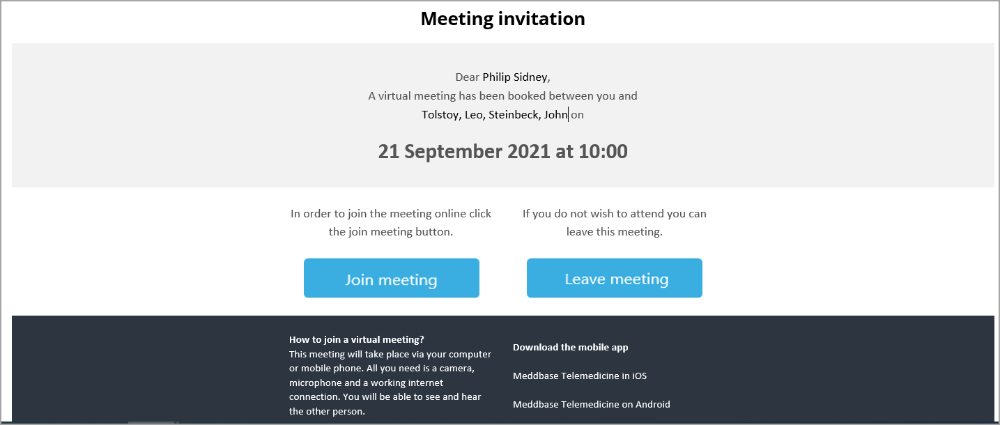
For an attendee who is a Meddbase user, it will send the email invitation to the email address attached to the user profile.
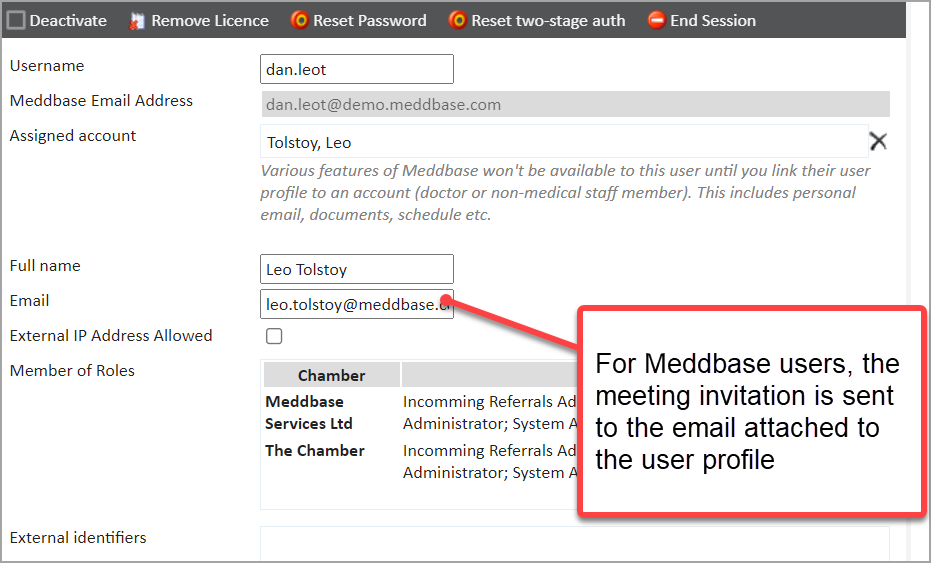
For an attendee that is a Clinician or Non-medical Staff record in Meddbase but not a Meddbase user, it will send the email invitation to the email address recorded in the Contact section for that record.
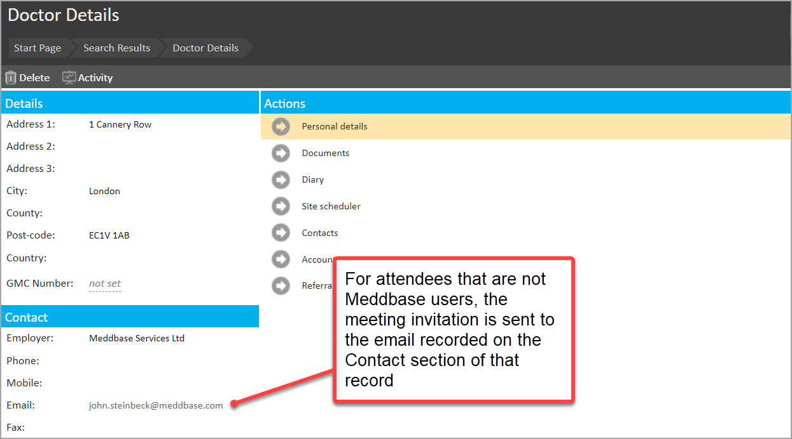
The booked meeting appears in the calendar for Meddbase users
When created, the meeting appears in the Calendar of Meddbase users.
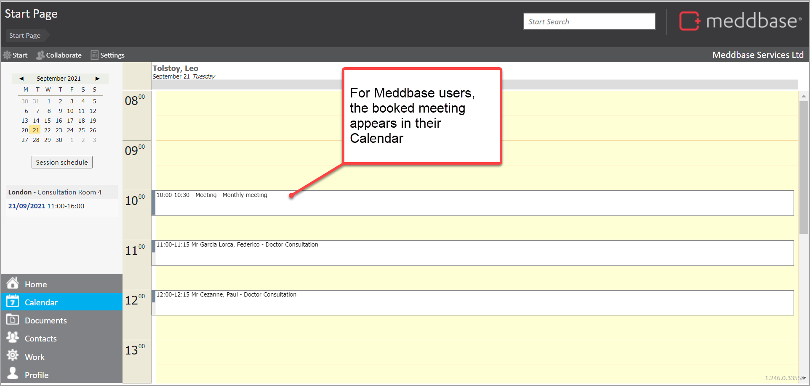
What can you do with a meeting when it has been booked?
There are several different actions you can take to manage an online meeting when it has been created. These are summarised in the sub-sections below.
View meeting information
When the meeting has been booked, Meddbase users who are attendees can view information about the meeting as follows:
Go to the Calendar from the start page of the Meddbase application
Navigate to the date when the meeting has been booked via the calendar
Click on the meeting booking
Detail for this meeting is displayed and shows:
Information about the meeting
Collaborators (attendees) for the meeting
Admins who control the administration of the online meeting
Documents that have been attached to the meeting
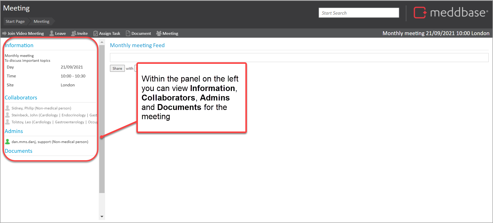
Invite further attendees
Attendees set as Admins for the meeting can use the Invite button to search for and invite further attendees (as noted above in How do you book an online meeting?).
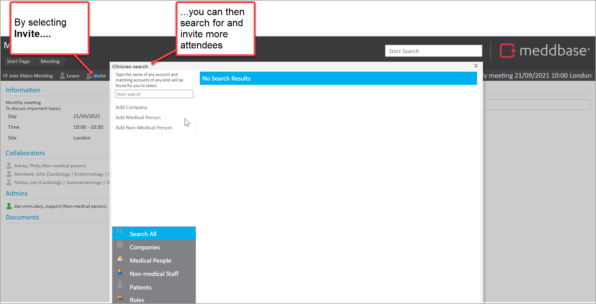
Assign tasks for the meeting
Each attendee who is a Meddbase user can use the Assign Task button to assign tasks to Meddbase users.
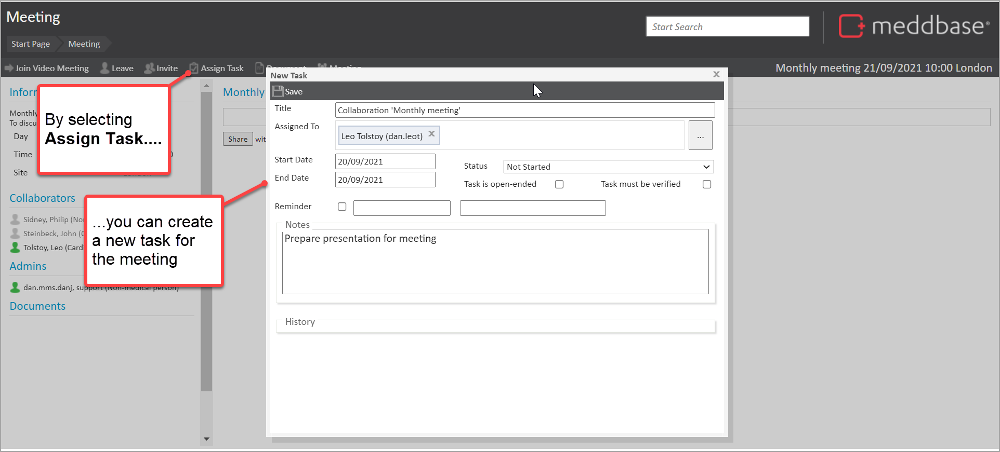
Add and create documents for the meeting
Each attendee who is a Meddbase user can select the Documents button and choose an option from the menu to create or attach documents to the meeting.
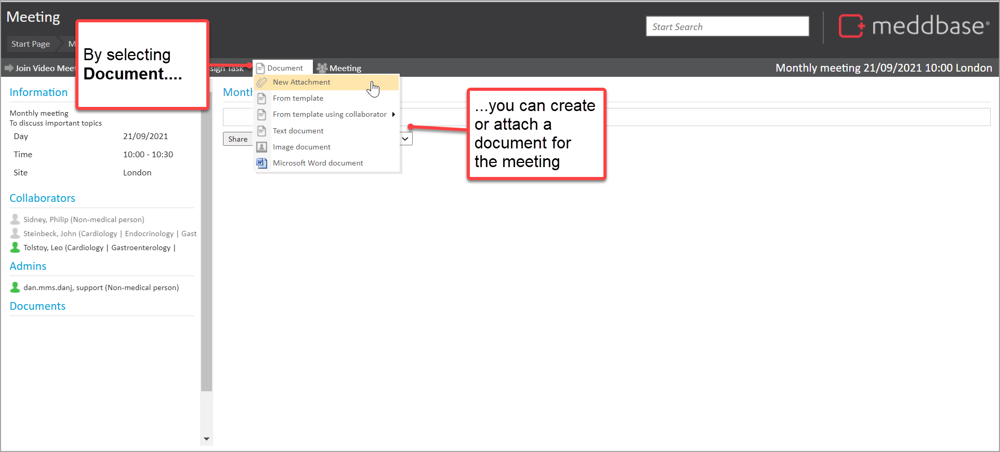
When added the document appears in the Documents list and a message is added to the Feed.
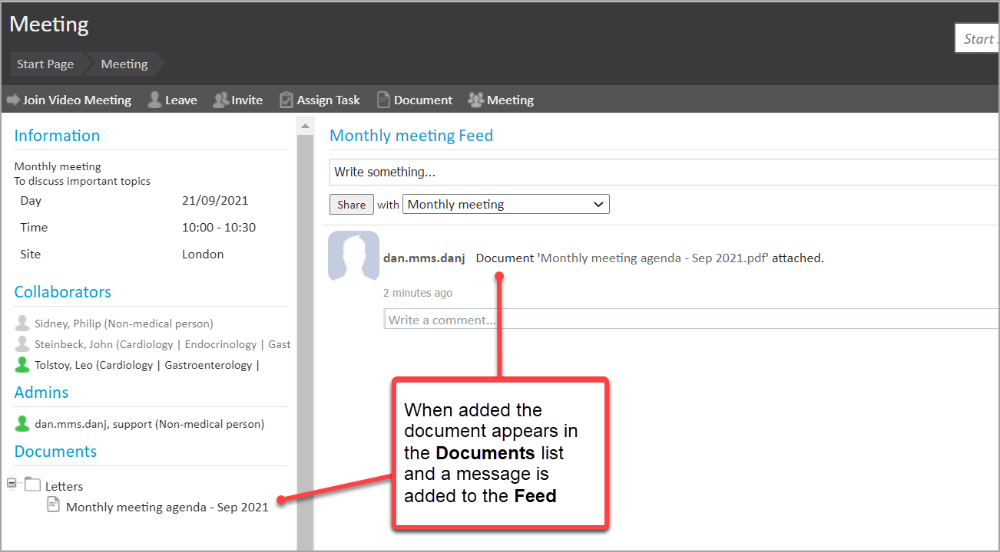
Update and cancel the meeting
Attendees set as Admins for the meeting can select the Meeting button and choose to Modify or Cancel the meeting. They can also manage Members and view Activity.
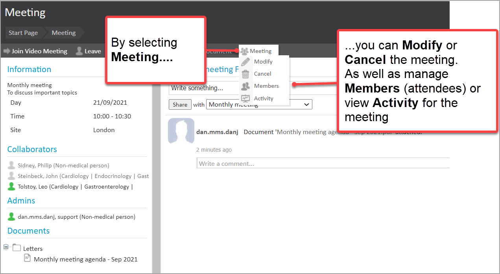
These menu options are described further in the table below.
Action
What it does
Modify
Re-opens the Book a meeting dialogue (introduced above) and enables you to adjust the date, time, duration, Site/Location and Subject of the meeting.
Cancel
Enables you to completely cancel the meeting.
Members
Enables you to remove an attendee or make an attendee an Admin for the meeting.
Activity
Displays the activity log for the meeting.
Join Video Meeting
Each attendee who is a Meddbase user can select Join Video Meeting from the button bar. More specifically:
An Admin attendee for the meeting can both start and join the meeting
Other attendees can join the meeting as an attendee.
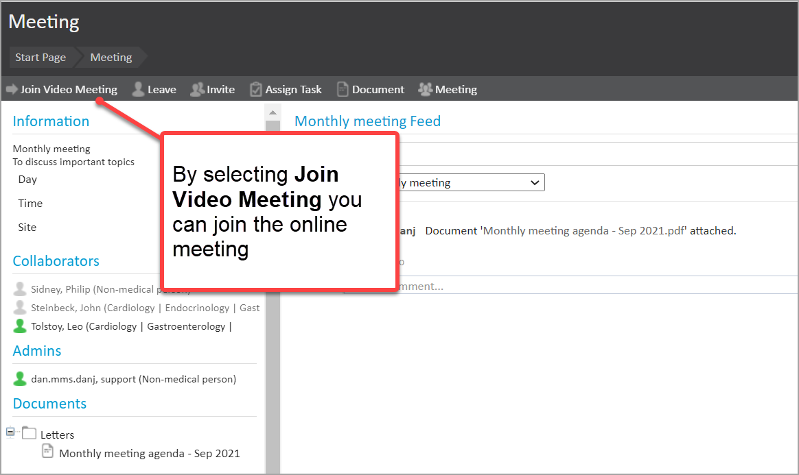
Did you know?
When booking an Online video meeting, the Send invitation email is ticked by default and cannot be unticked
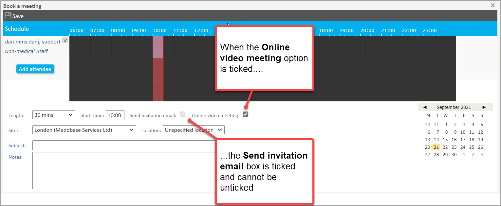
When booking a meeting, you can use the vertical red slider to adjust the meeting start and end time.
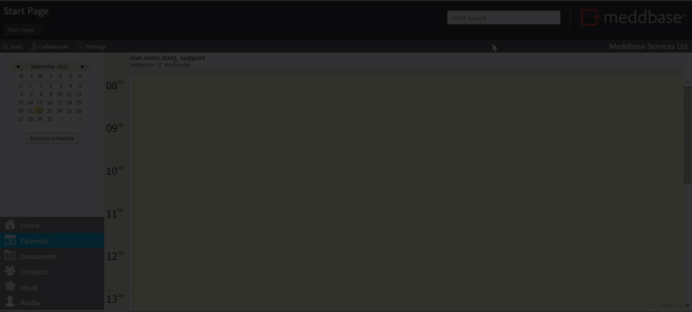
It is possible to book meetings outside of the clinician's availability as set in the Clinician's Site Schedule. This is because the site scheduler is used mainly for the purpose of availability for booking patient appointments.
When booking an online meeting, there is no requirement to record a Location value (as the meeting is online).
When adding attendees for a meeting, you can search for specific categories of attendees (Companies, Medical People, Non-medical Staff, and Patients).
Sites and Locations for meetings can be set up in Common Catalogues by users with appropriate permissions (as explained here).
As soon as someone shares either a document or adds something to the feed the meeting will appear on the start page under Groups and Meetings. This will only display the most recently updated 5 meetings.
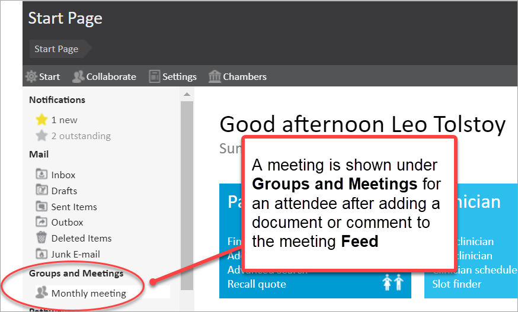
Want to see more?
You can watch a video presentation that will guide you through the setup here.